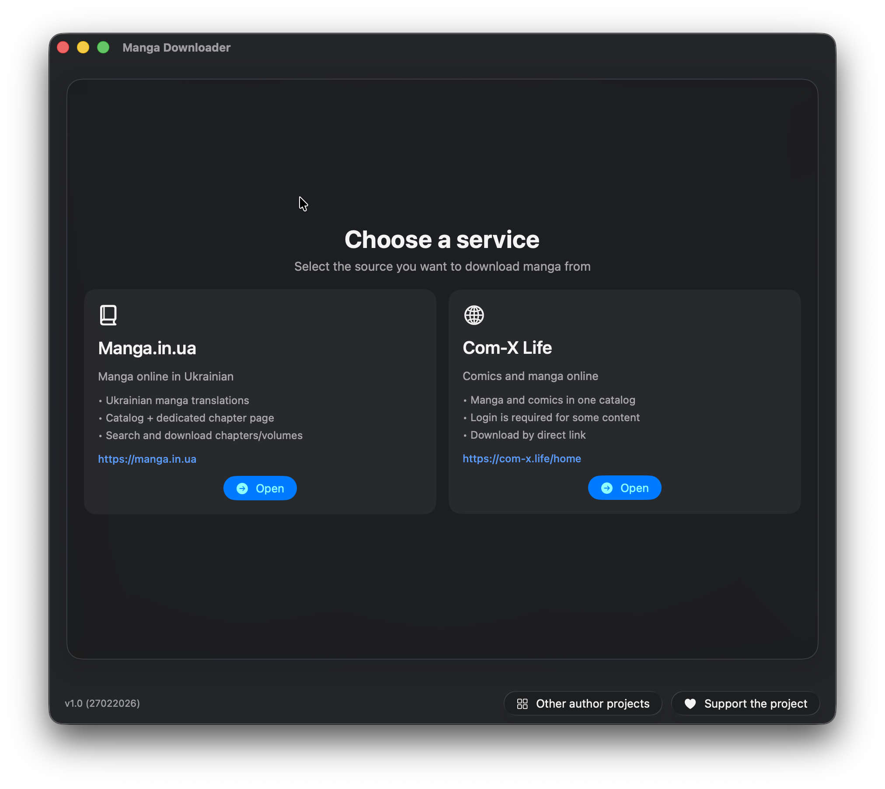
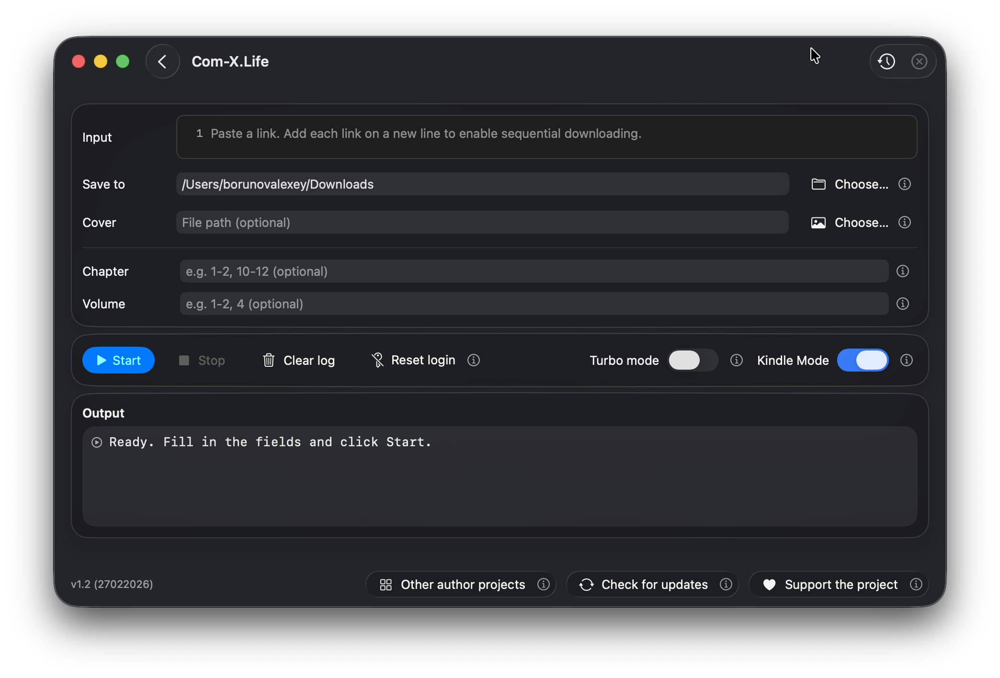

Manga Downloader (macOS) - Документация
Версия: 1.0 | Платформа: нативное SwiftUI-приложение для macOS
Что это
Manga Downloader - это приложение для macOS, которое помогает скачивать мангу с поддерживаемых сайтов и конвертировать ее в EPUB, удобный для e-ink чтения.
Поддерживаемые источники: manga/in/ua (manga.in.ua) и com-x.life (com-x.life). Интерфейс доступен на украинском, английском и русском языках.
Скриншоты



Возможности
- Выбор одного из двух источников: manga/in/ua или com-x.life.
- Вставка одной ссылки или очереди ссылок (через запятую или с новой строки).
- В режиме manga/in/ua приложение автоматически переключается: URL для загрузки, обычный текст для поиска.
- Фильтрация глав/томов с синтаксисом диапазонов:
1-2,1-2,4,10-12. - Опциональная пользовательская обложка EPUB.
- Отдельный EPUB для каждого тома.
- Понятные локализованные логи, кликабельные ссылки и многоуровневые прогресс-бары.
- Управление Start/Stop с корректной отменой и очисткой процессов.
- Turbo-режим для более высокой производительности (с предупреждением и сохранением состояния).
- По завершении: уведомление в приложении и системное уведомление macOS.
Поддерживаемые сервисы
manga/in/ua
- Поиск по текстовому запросу, парсинг карточек и удобный вывод результатов в логах.
- Загрузка по URL: резолв ссылок, получение глав, применение фильтров, загрузка изображений, сборка CBZ и EPUB.
- Порядок страниц EPUB формируется по manga-style логике приложения.
com-x.life
- Загрузка по прямому URL с парсингом метаданных и глав из payload сайта.
- Загрузка архивов глав, распаковка, затем конвертация и упаковка.
- Если нужен вход: in-app login WebView, сохранение cookies и автоматическая повторная попытка.
- Устойчивый парсинг для разных вариантов payload и полей chapter ID.
Как это работает (пошагово)
- Откройте приложение и выберите источник.
- Укажите URL(ы), или введите текст для поиска в manga/in/ua.
- При необходимости задайте фильтры глав/томов и папку вывода.
- При необходимости выберите пользовательскую обложку.
- Нажмите Start. Для каждого набора глава/страницы выполняется pipeline:
- Загрузка исходного изображения/архива.
- Конвертация в grayscale (B/W).
- Оптимизация под e-ink (макс. высота 1080px, сохранение пропорций, без апскейла).
- Конвертация в HEIC.
- Удаление metadata/EXIF, где возможно.
- Промежуточная сборка по томам и упаковка.
- Создание CBZ, затем EPUB по каждому тому, и очистка временных артефактов после успеха.
Auth-поток (com-x.life)
- Downloader проверяет, нужна ли авторизация.
- Если валидные cookies уже есть, повторная попытка идет без UI логина.
- Если нет, открывается in-app login WebView и cookies считываются.
- Cookies сохраняются, после чего загрузка запускается повторно.
- При необходимости сохраненные cookies можно сбросить через reset login.
Правила фильтрации
- Поддерживаемый синтаксис: отдельные значения и диапазоны (например,
1-2,4,10-12). - Если заданы оба фильтра, фильтр глав применяется внутри отфильтрованных томов.
- Невалидный синтаксис возвращает явную ошибку валидации.
Прогресс, логи и управление процессом
- Панель логов показывает события в читаемом виде и кликабельные ссылки.
- Этапы прогресса: загрузка, B/W-конвертация, оптимизация разрешения, HEIC-оптимизация, EPUB-конвертация тома.
- Многоуровневый прогресс отслеживает страницы главы, главы в томе и общий прогресс по томам.
- Stop отменяет задачу, завершает зарегистрированные shell-процессы, логирует отмену и возвращает режим вентиляторов в auto (если использовался).
Turbo-режим и производительность
- Turbo OFF: фоновые приоритеты, меньший параллелизм/сетевая агрессивность,
niceдля shell-команд. - Turbo ON: высокие приоритеты, больший параллелизм по числу CPU-ядер, более высокая сетевая отзывчивость.
- При включении Turbo показывается предупреждение; состояние сохраняется глобально.
- Опциональная интеграция fan helper: max-режим во время активной обработки в Turbo, возврат в auto при остановке/завершении.
Зависимости и инструменты
- Для лучшего качества конвертации приоритетно используется ImageMagick
magick. - Fallback-инструменты: нативные команды macOS, включая
sips. - Приложение может проверять наличие
magick, запускать команду установки через Homebrew в Terminal и опрашивать статус завершения. - Интеграция TelegramReporter отправляет стартовую телеметрию/лог с настроенными token/chat/app tag.
Руководство по использованию
- Запустите приложение и выберите manga/in/ua или com-x.life.
- Вставьте одну или несколько ссылок. Для поиска в manga/in/ua введите обычный текст вместо URL.
- При необходимости настройте фильтры глав/томов.
- Выберите директорию вывода и опциональную обложку EPUB.
- При необходимости включите Turbo (с предупреждением).
- Нажмите Start и отслеживайте логи и прогресс.
- После завершения проверьте уведомление и EPUB-файлы по томам.
FAQ / Устранение неполадок
Приложение не принимает ввод
Пустой ввод блокируется. В режиме com-x.life все элементы очереди должны быть валидными URL.
Фильтры не применяются
Проверьте синтаксис и удалите невалидные токены. Используйте только числа и диапазоны через запятую.
com-x.life просит авторизацию
Выполните вход в WebView. Если cookies устарели, используйте reset login и повторите запуск.
Конвертация медленная или низкого качества
Установите ImageMagick (magick) для предпочтительного пути конвертации. Иначе приложение использует нативные инструменты.
Высокая нагрузка CPU или температура
Отключите Turbo для снижения нагрузки. Turbo намеренно увеличивает параллелизм и скорость обработки.
Конфиденциальность и юридическое предупреждение
- Приложение обрабатывает URL и загружаемый контент, предоставленные пользователем.
- Cookies авторизации com-x.life сохраняются для повторных авторизованных запросов и могут быть сброшены пользователем.
- Стартовая телеметрия/логи через TelegramReporter работают только при наличии настроенных учетных данных.
- Пользователь несет ответственность за соблюдение условий сервисов и применимого авторского права.
Журнал изменений / Примечания к релизу (1.0)
- Первый документированный релиз Manga Downloader для macOS.
- Поддержка двух сервисов: manga/in/ua и com-x.life.
- Полный pipeline от загрузки до EPUB: grayscale, e-ink оптимизация, HEIC и EPUB по томам.
- com-x.life login WebView с сохранением cookies и reset-действием.
- Локализованные логи в реальном времени, progress bars, alert/notification, Start/Stop и Turbo-режим.
- Мультиязычная документация GitHub Pages (EN/UK/RU).
Вопросы и предложения
Если у вас есть вопросы или предложения, будем рады вашим письмам на borunov.alexey.work@gmail.com.